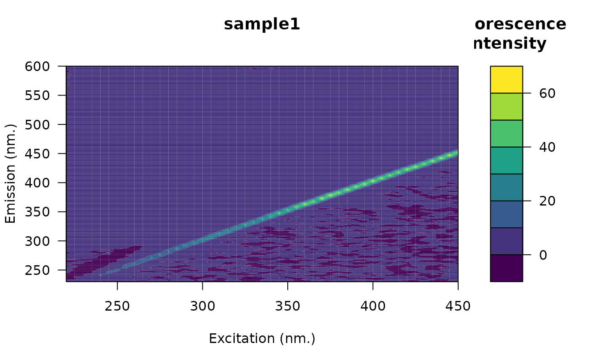
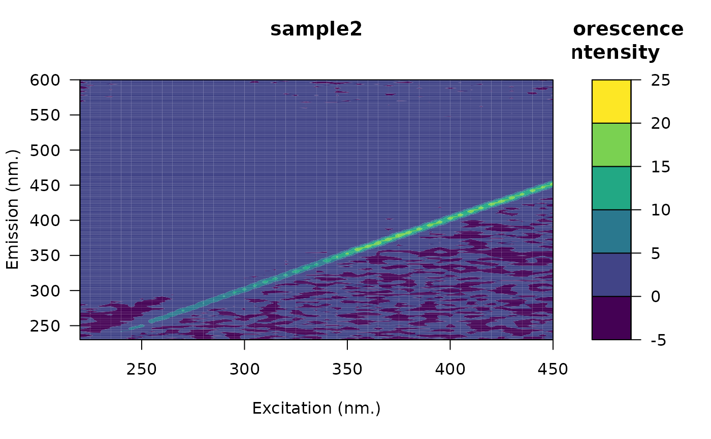

This function is used to remove blank from eems which can help to reduce the effect of scatter bands.
eem_remove_blank(eem, blank = NA)
Arguments
| eem | An object of class |
|---|---|
| blank | An object of class |
Value
An object of class eemlist.
Details
The function will first try to use the provided blank. If the
blank is omitted, the function will then try to extract the blank from the
eemlist object. This is done by looking for sample names containing
one of these complete or partial strings (ignoring case):
nano
miliq
milliq
mq
blank
Note that if blank is omitted, the function will group the
eemlist based on file location and will assumes that there is a
blank sample in each folder. In that context, the blank will be used on
each sample in the same folder. If more than one blank is found they will
be averaged (a message will be printed if this appends).
Consider the following example where there are two folders that could represent scans performed on two different days `scans_day_1` and `scans_day_2`.
| scans_day_1 | |
| nano.csv | |
| sample1.csv | |
| sample2.csv | |
| sample3.csv | |
| scans_day_2 | |
| blank.csv | |
| s1.csv | |
| s2.csv | |
| s3.csv |
In each folder there are three samples and one blank files. In that context, `eem_remove_blank()` will use the blank `nano.csv` from `sample1.csv`, `sample2.csv` and `sample3.csv`. The same strategy will be used for files in folder `scans_day_2` but with blank named `blank.csv`.
Note that the blanks eem are not returned by the function.
Note that blank correction should be performed before Raman
normalization (eem_raman_normalisation()). An error will occur
if trying to perform blank correction after Raman normalization.
References
Murphy, K. R., Stedmon, C. a., Graeber, D., & Bro, R. (2013). Fluorescence spectroscopy and multi-way techniques. PARAFAC. Analytical Methods, 5(23), 6557. http://doi.org/10.1039/c3ay41160e
http://xlink.rsc.org/?DOI=c3ay41160e
Examples
## Example 1 # Open the fluorescence eem file <- system.file("extdata/cary/scans_day_1", "sample1.csv", package = "eemR") eem <- eem_read(file, import_function = "cary") plot(eem)# Open the blank eem file <- system.file("extdata/cary/scans_day_1", "nano.csv", package = "eemR") blank <- eem_read(file, import_function = "cary") plot(blank)## Example 2 # Open the fluorescence eem folder <- system.file("extdata/cary/scans_day_1", package = "eemR") eems <- eem_read(folder, import_function = "cary") plot(eems, which = 3)# Open the blank eem file <- system.file("extdata/cary/scans_day_1", "nano.csv", package = "eemR") blank <- eem_read(file, import_function = "cary") plot(blank)# Automatic correction folder <- system.file("extdata/cary/", package = "eemR") # Look at the folder structure list.files(folder, "*.csv", recursive = TRUE)#> [1] "scans_day_1/nano.csv" "scans_day_1/sample1.csv" #> [3] "scans_day_1/sample2.csv" "scans_day_1/sample3.csv" #> [5] "scans_day_2/blank.csv" "scans_day_2/s1.csv"#>#>